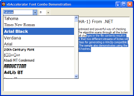
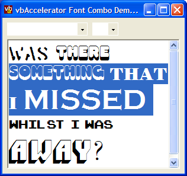
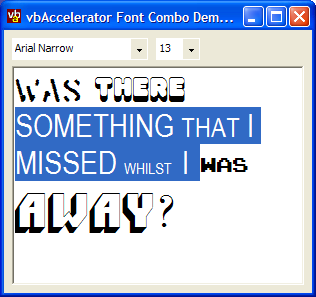

Font ComboBox Code and Demonstration (75K)
Font ComboBox Code and Demonstration (75K)
 2 Nov 2003
2 Nov 2003
First Posted
 vbAccelerator IconComboBox Control
vbAccelerator IconComboBox Control

Font ComboBox
Microsoft Office style font-picking for .NET Windows Forms applications
This control adds a thin wrapper around the Icon ComboBox to convert it into an Office-style font picker control. Features include a most-recently used font section, initialisation on a background thread, auto-complete and built-in detection of non-character fonts like Wingdings (VB.NET and C# code provided).
Building a Font Combo Box
This sample reuses the functionality in the Icon ComboBox control, so before trying it you will need to download the binary for the control there and either add it to the demo application's output folder, or register it into the GAC.
The Icon ComboBox control includes most of the functionality needed to draw this type of control, including the ability to render items with different fonts and auto-completion facilities. What's needed is to populate the list of fonts and provide a mechanism to maintain the list of Most-Recently Used (MRU) fonts at the top of the combo box.
Adding Those Fonts
Finding the fonts to show isn't too tricky, as the .NET Framework includes the InstalledFontCollection object which contains an IEnumerable collection of all the FontFamily names on the system. (Actually, there appear to be some obscure non-true type fonts missing. But in practice I don't think this should prove to be an issue). Enumerating through the collection can be slow though, and if the control performs the task synchronously it can significantly slow down the start-up of an application.
For this reason, the population of the font list is performed asynchronously. As noted in the Framework documentation, Windows Forms use the single-threaded apartment (STA) model. This requires that any method which wants to call a control from a thread outside the one that created the control must ensure the call is marshalled to the the control's own thread. Handling this problem isn't too tricky, though, as the control provides the BeginInvoke method which handles the complexity of doing this. In order to use BeginInvoke you just need to call the method you want to run asynchronously using a Delegate. The outline of the code to do this is shown below:
public void LoadFonts()
{
// prepare
// run font population on a background thread
PopulateFontComboHandler populator =
new PopulateFontComboHandler(PopulateFontCombo);
populator.BeginInvoke(null, null);
}
private delegate void PopulateFontComboHandler();
private void PopulateFontCombo()
{
// Get the collection of installed fonts:
InstalledFontCollection fonts = new InstalledFontCollection();
// For each item:
foreach (FontFamily family in fonts.Families)
{
// add to control
}
PopulateFontComboCompleteHandler complete =
new PopulateFontComboCompleteHandler(PopulateFontComboComplete);
complete.BeginInvoke(null, null);
}
private delegate void PopulateFontComboCompleteHandler();
private void PopulateFontComboComplete()
{
// raises Populated event
}
Detecting if a Font is a Symbol Font
Whilst the Font object provides a good number of properties about a font, there are a few that aren't included. The Panose number of the font is one of them. This property, part of the True Type font definition, can be used for font matching purposes and is also useful for determing information about the type of a particular font (provided the font's author has included the information). The possible values for the Panose number are as follows:
/// <summary>
/// Enumeration of Panose Font Family Types. These can be used for
/// determining the similarity of two fonts or for detecting non-character
/// fonts like WingDings.
/// </summary>
public enum PanoseFontFamilyTypes : int
{
/// <summary>
/// Any
/// </summary>
PAN_ANY = 0,
/// <summary>
/// No Fit
/// </summary>
PAN_NO_FIT = 1,
/// <summary>
/// Text and Display
/// </summary>
PAN_FAMILY_TEXT_DISPLAY = 2,
/// <summary>
/// Script
/// </summary>
PAN_FAMILY_SCRIPT = 3,
/// <summary>
/// Decorative
/// </summary>
PAN_FAMILY_DECORATIVE = 4,
/// <summary>
/// Pictorial
/// </summary>
PAN_FAMILY_PICTORIAL = 5
}
The only function which returns this information is the GDI API call GetOutlineTextMetrics, which returns pretty much anything you would ever want to know about a font and much more. This function returns a difficult C structure which you could adapt using the InteropServices functions but is easier to read simply as a block of memory. Here's the method I used to get the value. The first call to GetOutlineTextMetrics gets the size of the buffer needed to accomodate the entire structure; then the block is allocated and the second call actually gets the values. Once the block has been populated it is then a matter of locating the byte which contains the Panose member, in the case of an ANSI call this is at offset 61 from the start of the structure:
[DllImport("gdi32", CharSet = CharSet.Ansi)]
private static extern int GetOutlineTextMetrics(
IntPtr hdc, // handle to DC
int cbData, // size in bytes for text metrics
IntPtr lpOtm // pointer to buffer to receive outline text metrics structure
);
/// <summary>
/// Gets the <see cref="PanoseFontFamilyTypes"/> for the specified font.
/// </summary>
/// <param name="graphics">A graphics object to use when detecting the Panose
/// family.</param>
/// <param name="font">The font to check.</param>
/// <returns>The Panose font family type.</returns>
public static PanoseFontFamilyTypes PanoseFontFamilyType(
Graphics graphics, Font font)
{
byte bFamilyType = 0;
IntPtr hdc = graphics.GetHdc();
IntPtr hFontOld = SelectObject(hdc, font.ToHfont());
int bufSize = GetOutlineTextMetrics(hdc, 0, IntPtr.Zero);
IntPtr lpOtm = Marshal.AllocCoTaskMem(bufSize);
Marshal.WriteInt32(lpOtm, bufSize);
int success = GetOutlineTextMetrics(hdc, bufSize, lpOtm);
if (success != 0)
{
int offset = 61;
bFamilyType = Marshal.ReadByte(lpOtm, offset);
}
Marshal.FreeCoTaskMem(lpOtm);
SelectObject(hdc, hFontOld);
graphics.ReleaseHdc(hdc);
return (PanoseFontFamilyTypes) bFamilyType;
}
About The Demonstration Application
The demonstration hooks up the FontComboBox control so it can be used to display and set the font in a RichTextBox control. The .NET Framework RichTextBox control is a thin wrapper over the Windows API RichEdit control and as such inherits many of the idiosyncrasities and quirks of the underlying control which make it, frankly, a bitch to use. The main problem with the control is that the only way to get or set the formatting of a character within the control is by selecting it. This may be fine for some purposes but most people find it an implausible limitation, for two reasons:
- Let's say, for example, you selected more than one character in the control. It could happen, you never know, perhaps it already has. If you did, you have no way of finding out about the formatting of the selected characters without selecting each one inside the selection in turn. Oh, and did I mention that you might want to put the original selection back again when you've finished?
- Let's say, for example, you wanted to format characters in the control behind the scenes. It could happen, you never know, perhaps it already has. If you did, the only way to format the characters is by selecting them. If you don't want to disturb the current selection in the control then you almost certainly have an insoluble problem.
In any case, I'm sure the code review for this control was a real blast (if there ever was one...)
Given the above, I've made an attempt at emulating the type of font picking you get in Word in the demonstration. It isn't quite perfect but its a good start: the two issues that are outstanding are:
- The size box doesn't accommodate sizes that aren't in the drop-down list properly. This could be fixed with a bit more work.
- If a range is selected which contains items that have the same font, but different sizes, the control incorrectly reports that the selection contains a font with size 13. I'm not certain this can be fixed. The problem is shown in the figures below:
Single selection in the RichTextBox - font reported correctly.
Multiple fonts selected
In this case the SelectionFont property returns null, which is ok, although you have to enumerate through the characters in the selection to change them.
Multiple sizes of the same font selected
In this case the SelectionFont property returns the correct font name, but there's no easy way to determine that multiple sizes are selected because the size is set to 13. Perhaps it's always 13 in this case, perhaps not, I don't know.
The code to process a new font selection when multiple fonts are selected is worth taking a quick look at as it contains a few old-school tricks for working with the RichEdit selection. In this case you have to select each character in the original selection in turn to determine the size and style of the font before setting the new style. Normally if you do this its very slow, and you will see the selection point moving on the screen and converting each character - not very good!
To resolve this issue, you can instruct the RichEdit control to stop repainting and also you can stop it sending any events to the underlying RichTextBox framework code. This allows you to perform an update much more quickly. Here's the how you do it (in VB.NET - refer to the download for the C# versions)
Private Const WM_SETREDRAW As Integer = &HB
Private Const WM_USER As Integer = &H400
Private Const EM_GETEVENTMASK As Integer = (WM_USER + 59)
Private Const EM_SETEVENTMASK As Integer = (WM_USER + 69)
Private Declare Auto Function SendMessage Lib "user32.dll" ( _
ByVal hWnd As IntPtr, _
ByVal msg As Integer, _
ByVal wParam As Integer, _
ByVal lParam As IntPtr) As IntPtr
' We want to suspend redrawing because we need to select each
' character in turn to determine its fonts. However, RichTextBox
' appears to be missing some properties to do this, so use API:
' Stops RichText redrawing:
richTextBox1.SuspendLayout()
SendMessage(richTextBox1.Handle, WM_SETREDRAW, 0, IntPtr.Zero)
' Stops RichText sending any events:
Dim eventMask As IntPtr = SendMessage( _
richTextBox1.Handle, EM_GETEVENTMASK, 0, IntPtr.Zero)
' Get the selection extent:
Dim selStart = richTextBox1.SelectionStart
Dim selEnd = richTextBox1.SelectionStart + richTextBox1.SelectionLength
... perform processing here ...
' Turn events back on again:
SendMessage(richTextBox1.Handle, EM_SETEVENTMASK, 0, eventMask)
' Select the correct range (we must do this with events on otherwise
' the scroll state is inconsistent):
richTextBox1.Select(selStart, selSize)
' Turn redraw back on again:
SendMessage(richTextBox1.Handle, WM_SETREDRAW, 1, IntPtr.Zero)
richTextBox1.ResumeLayout()
' Show changes
richTextBox1.Invalidate()
Using this technique you can process through quite large ranges in the RichTextBox without flickering. These sort of techniques can be used to create highlighting type applications using a RichTextBox control (although it would be better to start with something more useful and actually works, like the cool SharpDevelop code editor control.)
The remainder of the demonstration is easier. The code hooks up the CloseUp and SelectedIndexChanged from the FontComboBox. Whenever a drop-down is closed up, the font is changed to the current selection in the control. When the selected index changes, the code checks if the combo box is dropped using the base DroppedDown property, and if it it's not down, changes the font.
Conclusion
This article provides a Font Picker control which has the features you need to emulate the Office font picking applications. You can use this control either to pick a particular font, or, with some more effort around dealing with the RichEdit control, as part of a functionally-rich content editing application.